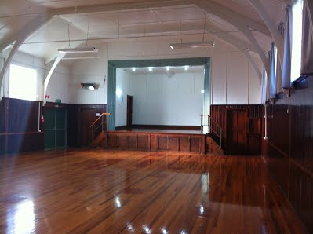
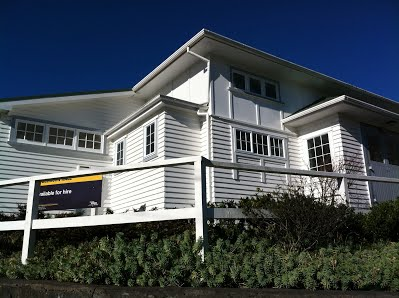
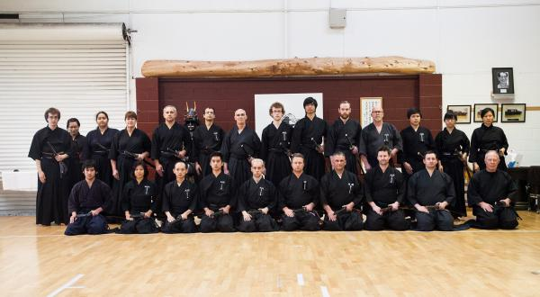

Wellington Iaidō club has been running since 2010 covering the All Japan Kendō Federation Iaidō ( also called Seiteigata) and for advanced practitioners, the Koryū (old style) of Musō Jikiden Eishin-ryū (MJER). Training is available twice a week and led by Cam Findlay, 3rd Dan.
Cam originally started learning Iaidō at the Sei tou ken yu kai (Canterbury Kendō) dojo under Eynon Philips in Christchurch, NZ before moving to Wellington and sharing this interesting martial art in the capital city. Canterbury Kendō was founded by Alex Bennett a well known NZ expat based in Japan and Editor-in-Chief of "Kendō World" magazine.
Beginners classes are Tuesday 6-7pm and there is a further session Saturday 3-5pm for those wanting to progress faster or later study MJER Iai.
To join please contact Cam via email info@wellington-iaido.com or phone 0212630351.
Our dojo is at Vogelmorn Hall (13 Vennell St), Brooklyn, Wellington, New Zealand and overlooked by the famous 3 bladed Brooklyn wind turbine (we adopted our club logo from this).

The club is connected with New Zealand Kendo Federation affiliated clubs in Auckland, New Plymouth, Whangarei and Christchurch. You can attend regular seminars and gradings throughout the year, giving you opportunities to train with other iaidō practitioners and sensei.

As Wellington is well know for it's windy weather, our fitting club motto is:
Yanagi ni kaze
柳 に 風
"Flow like the willow tree in the wind"